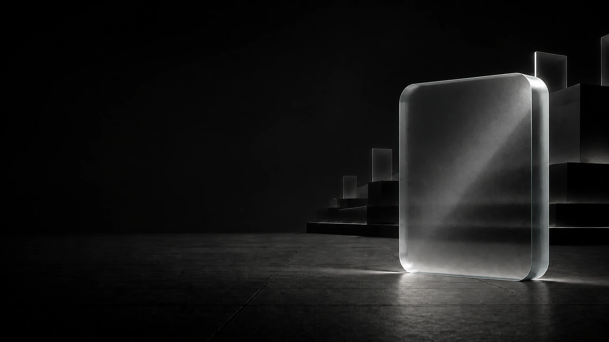
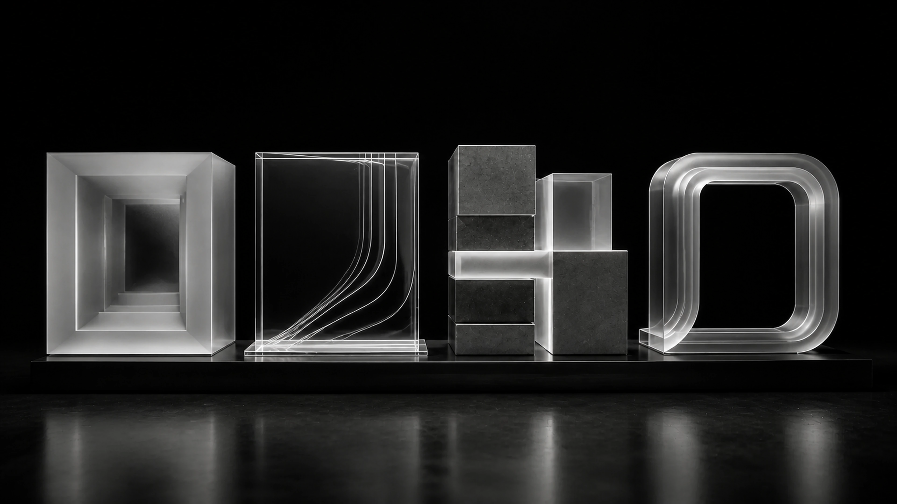
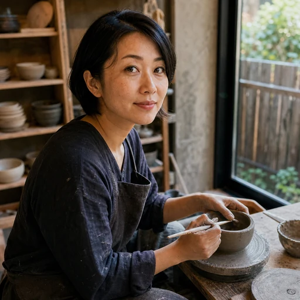
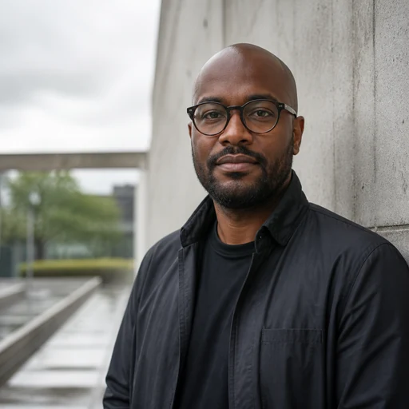
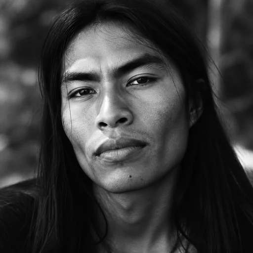
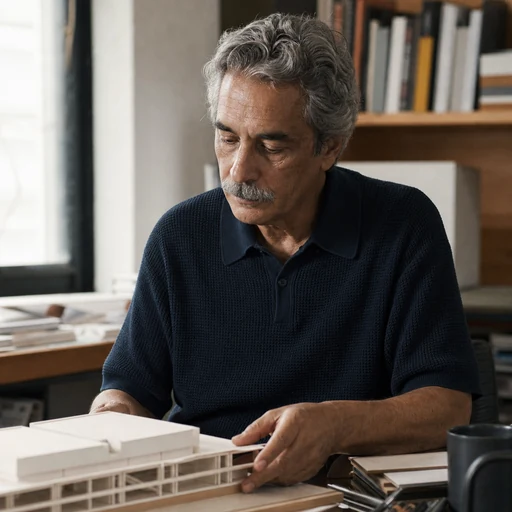
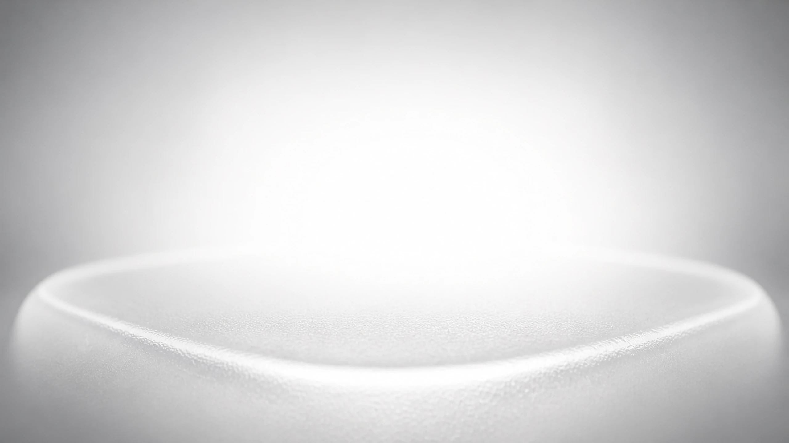

Entendemos o seu negócio. Começamos com uma conversa objetiva para conhecer sua empresa, o momento atual, o público e a percepção que você deseja construir. Essa leitura organiza prioridades e evita decisões visuais desconectadas do que realmente importa.
Você recebe: um direcionamento claro
Estúdio de tecnologia
Presençaque transmiteconfiança
Sites, sistemas e conteúdo para empresas que querem ser levadas a sério na internet.
Estratégia •
Identidade •
Design •
Tecnologia •
Conteúdo •
Presença •
Credibilidade •
Conversão •
O estúdio
Um estúdio de presença digital
A LUME projeta como uma empresa é percebida na internet. Reunimos design, comunicação e tecnologia para colocar a sua apresentação à altura do que você entrega.
Cada projeto nasce da identidade da empresa, nunca de um modelo pronto.
Antes de conhecer o seu trabalho, as pessoas conhecem a sua presença digital.
100%
Sob medida
Cada projeto é criado para representar a identidade da sua empresa.
24h
Retorno
Respondemos novos contatos em até um dia útil.
Acompanhamento próximo
Você conversa diretamente com quem está conduzindo o projeto.
Até ficar certo
Refinamos cada detalhe até que o projeto represente sua marca da melhor forma.
Serviços
Nossos serviços
Quatro formas de colocar a qualidade da sua empresa à vista.
01
Sites institucionais
Site sólido e rápido, com design alinhado à sua identidade e preparado para ser encontrado no Google.
Conversar sobre este serviço02
Plataformas e sistemas
Painéis, áreas para clientes e automações internas em uma estrutura segura, simples de usar e pronta para crescer.
Conversar sobre este serviço03
Páginas de venda
Uma página com um objetivo claro: transformar visita em conversa. Texto e estrutura conduzem à ação.
Conversar sobre este serviço04
Carrosséis e posts
Conteúdo visual consistente para manter sua marca ativa, reconhecível e alinhada à própria identidade.
Conversar sobre este serviço
01 / 04

CADA ETAPACOM CLAREZA
Continue rolando
Como trabalhamos
Da primeira conversa à entrega
Quatro etapas para acompanhar cada decisão, aprovar com segurança e saber o que vem depois.
-
01
Imersão
Entendemos o seu negócio. Conhecemos sua empresa, seus objetivos e como ela quer ser percebida.Você recebe: um direcionamento claro -
02
Visualização
Sua presença ganha forma. Você vê a proposta visual antes de avançar. Nada segue sem a sua aprovação.Você recebe: uma prévia completa -
03
Construção
Transformamos ideia em realidade. Com a direção aprovada, cuidamos dos detalhes e mostramos a evolução.Você recebe: seu projeto publicado -
04
Continuidade
A parceria continua. Depois da entrega, seguimos por perto para ajustes e próximos passos.Você recebe: suporte próximo
Sua presença ganha forma. Traduzimos o direcionamento em referências, hierarquia, composição e linguagem visual. Você acompanha a proposta antes da construção e pode validar o caminho com segurança. Nada avança sem a sua aprovação.
Você recebe: uma prévia completaTransformamos ideia em realidade. Com a direção aprovada, desenvolvemos cada página, interação e detalhe responsivo. A evolução é apresentada de forma clara para que você acompanhe o projeto sem precisar dominar termos técnicos.
Você recebe: seu projeto publicadoA parceria continua. Depois da entrega, seguimos disponíveis para ajustes, dúvidas e próximos movimentos. O projeto não termina no lançamento, ele passa a ser uma base consistente para a presença digital da sua empresa.
Você recebe: suporte próximoA realidade
O que ouvimos com frequência
“Tenho vergonha de mandar o link do meu site.”
“No celular, fica difícil de usar.”
“Ainda nem tenho um site.”
“Meu Instagram está parado.”
“Cada publicação parece de uma empresa diferente.”
Se você se reconheceu, há solução. Ela não começa mudando o seu trabalho, mas a forma como ele é visto.
Relatos
O que fica depois da entrega
Experiências de quem decidiu colocar a apresentação do negócio à altura do próprio trabalho.

Mirela SatoAteliê Oliva
“Eu tinha um trabalho bonito, mas o site não mostrava isso. Agora mando o link sem pensar duas vezes.”

Rafael MenezesMenezes Arquitetura
“Fui vendo cada etapa antes de aprovar. Isso deixou o processo muito mais tranquilo do que eu imaginava.”
Lívia FurtadoClínica Aurora
“A clínica ficou mais clara e acolhedora. Até as dúvidas que chegavam pelo WhatsApp diminuíram.”
Caio NóbregaCasa Norte Café
“O site antigo parecia improvisado. O novo finalmente tem a mesma atenção que a gente coloca no café.”

Thiago AlcântaraEstúdio Vereda
“Eu não sabia explicar o que queria. As primeiras referências organizaram tudo e fizeram a ideia aparecer.”

Otávio SallesOficina Salles
“Não houve surpresa no final. Acompanhei as decisões, entendi o caminho e aprovei com segurança.”
Dandara PaivaFlora Norte
“Queria uma página simples, sem cara de modelo pronto. Ficou leve, direta e com a nossa personalidade.”
Dúvidas
Perguntas frequentes
Quanto custa?
O investimento depende do tipo de projeto, da quantidade de páginas e das funcionalidades necessárias. Depois de uma conversa breve, você recebe uma proposta com escopo, entregas, prazo e valor definidos. Assim, sabe exatamente o que está contratando antes de começar, sem cobranças inesperadas no meio do caminho.
Quanto tempo leva?
Um site institucional costuma levar de três a seis semanas depois que o direcionamento e os materiais estão aprovados. Páginas mais simples podem ficar prontas antes, enquanto plataformas e sistemas exigem um cronograma próprio. O prazo real é apresentado na proposta e considera também os momentos de revisão e aprovação.
Nunca fiz um site. Isso é um problema?
Não. Você não precisa conhecer termos técnicos nem chegar com todas as respostas prontas. Conduzimos a conversa em linguagem simples, ajudamos a organizar as prioridades e mostramos cada decisão visual antes da construção. Você participa do que importa sem precisar administrar a parte técnica.
E se eu quiser mudar alguma coisa?
O projeto inclui momentos de revisão para reunir comentários e refinar a proposta. Você acompanha prévias, entende o motivo das escolhas e aprova cada etapa antes de avançarmos. Se surgir uma mudança que amplie o escopo combinado, explicamos o impacto em prazo e investimento antes de executar.
Preciso ter todos os textos e imagens?
Não. Podemos organizar o conteúdo existente, estruturar os textos principais e indicar o que precisa ser produzido. Também orientamos a seleção de fotografias e materiais da marca para que tudo tenha unidade. O objetivo é evitar que a falta de um arquivo ou de uma frase impeça o projeto de começar.
A LUME continua dando suporte depois da entrega?
Sim. A entrega inclui acompanhamento na publicação, conferência das páginas e correção de eventuais ajustes iniciais. Depois desse período, continuamos disponíveis para dúvidas, melhorias e novas necessidades. Quando fizer sentido, podemos combinar um formato de continuidade para atualizações recorrentes.

Contato
Sua marca merece ser lembrada
Conte o que sua empresa precisa. Em até 24 horas, retornamos com os próximos passos.